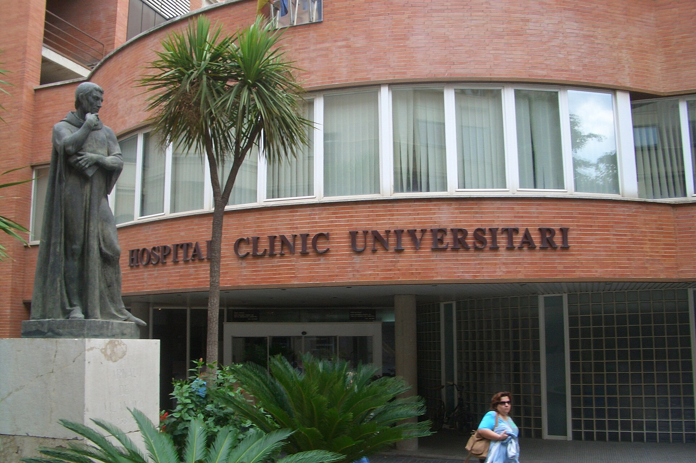

Partie 2 : La carte SIP - le graal des premières semaines
La Tarjeta Sanitaria Individual, c'est ta carte Vitale espagnole. Sans elle, t'as pas de médecin, pas de pédiatre, pas de spécialiste. Avec elle, tout s'ouvre. Voilà comment on va l'obtenir.
« La Tarjeta Sanitaria Individual, c'est ta carte Vitale espagnole. Sans elle, t'as pas de médecin, pas de pédiatre, pas de spécialiste. Avec elle, tout s'ouvre. »
Florian · Guide SantéC'est quoi, concrètement ?
Une carte plastifiée avec puce. Chaque membre de la famille a la sienne, même les bébés. Avec elle : médecin généraliste assigné à ton centre de santé de quartier, pédiatre dédié pour chaque enfant, hôpital public, médicaments remboursés (40-60%), spécialistes sur prescription, campagnes de vaccination.
Comment on l'obtient
Étape 1 : Le prérequis - un numéro de Sécu espagnole
Sans affiliation à la Seguridad Social, pas de carte SIP. T'as pas encore ton numéro ? Retourne lire la partie 1.
Étape 2 : Le Centro de Salud
Une fois ton numéro SSN en poche, direction le centre de santé de ton quartier. Sectorisé : ton adresse d'empadronamiento détermine lequel. Pas le choix.
Étape 3 : Les papiers
Ton NIE (ou passeport si t'as pas encore le NIE, mais sérieux fais le NIE), ton numéro d'affiliation SSN, l'empadronamiento.
Étape 4 : Ce que tu obtiens
Sur place, on te file un justificante provisional, un papier temporaire qui fait office de carte SIP. La vraie carte arrive par courrier sous deux à quatre semaines. Et voilà. T'es dans le système. Ton généraliste et ton pédiatre sont assignés, tu reçois leurs coordonnées, tu peux prendre rendez-vous.
Les pièges à éviter
🔴 Piège n°1 : le Centro de Salud est sectorisé. Ton adresse d'empadronamiento détermine tout. Si tu déménages, faut refaire la démarche. C'est pas compliqué mais faut y penser.
🔴 Piège n°2 : sans emploi, l'affiliation est pas automatique. LABORA, Convenio Especial, mutuelle privée : t'as des options mais faut les activer.
🔴 Piège n°3 : les délais varient. Août c'est mort. Vas-y en personne, tôt le matin, papiers en triple. Un sourire en espagnol, même approximatif, ça débloque des trucs.
🔴 Piège n°4 : la carte SIP est régionale. Émise par la Communauté Valencienne mais valable dans toute l'Espagne. Si tu bouges dans une autre région plus tard, faudra la transférer.
Notre stratégie, chrono
Pour nous, sans emploi à l'arrivée, voilà le plan :
- Avant le départ : demander la CEAM pour toute la famille.
- À l'arrivée : souscrire une mutuelle privée (sécurité immédiate).
- Semaine 1 : empadronamiento (priorité absolue), puis NIE.
- Semaine 2 : inscription LABORA + demande numéro SSN.
- Dès le SSN obtenu : Centro de Salud, tous les cinq, cartes SIP.
- En attendant : le justificatif provisoire nous couvre déjà.
- Sécurité renforcée : mutuelle privée pour le premier mois ou deux.
C'est un marathon administratif. Mais une fois la carte SIP en poche, c'est réglé pour des années. Et franchement, vu la qualité des soins en Espagne, surtout en pédiatrie, ça vaut chaque minute de paperasse.
📋 Voir les démarches administratives → 💶 Consulter le budget → 🛡️ Assurance santé avant le départ →